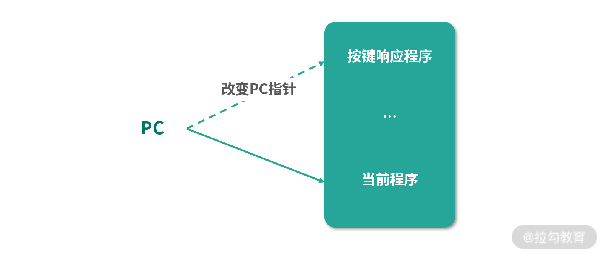

- 00 开篇词 为什么大厂面试必考操作系统？.md.html
- 00 课前必读 构建知识体系，可以这样做！.md.html
- 01 计算机是什么：“如何把程序写好”这个问题是可计算的吗？.md.html
- 02 程序的执行：相比 32 位，64 位的优势是什么？（上）.md.html
- 03 程序的执行：相比 32 位，64 位的优势是什么？（下）.md.html
- 04 构造复杂的程序：将一个递归函数转成非递归函数的通用方法.md.html
- 05 存储器分级：L1 Cache 比内存和 SSD 快多少倍？.md.html
- 05 (1) 加餐 练习题详解（一）.md.html
- 06 目录结构和文件管理指令：rm -rf 指令的作用是？.md.html
- 07 进程、重定向和管道指令：xargs 指令的作用是？.md.html
- 08 用户和权限管理指令： 请简述 Linux 权限划分的原则？.md.html
- 09 Linux 中的网络指令：如何查看一个域名有哪些 NS 记录？.md.html
- 10 软件的安装： 编译安装和包管理器安装有什么优势和劣势？.md.html
- 11 高级技巧之日志分析：利用 Linux 指令分析 Web 日志.md.html
- 12 高级技巧之集群部署：利用 Linux 指令同时在多台机器部署程序.md.html
- 12 (1)加餐 练习题详解（二）.md.html
- 13 操作系统内核：Linux 内核和 Windows 内核有什么区别？.md.html
- 14 用户态和内核态：用户态线程和内核态线程有什么区别？.md.html
- 15 中断和中断向量：Javajs 等语言为什么可以捕获到键盘输入？.md.html
- 16 WinMacUnixLinux 的区别和联系：为什么 Debian 漏洞排名第一还这么多人用？.md.html
- 16 (1)加餐 练习题详解（三）.md.html
- 17 进程和线程：进程的开销比线程大在了哪里？.md.html
- 18 锁、信号量和分布式锁：如何控制同一时间只有 2 个线程运行？.md.html
- 19 乐观锁、区块链：除了上锁还有哪些并发控制方法？.md.html
- 20 线程的调度：线程调度都有哪些方法？.md.html
- 21 哲学家就餐问题：什么情况下会触发饥饿和死锁？.md.html
- 22 进程间通信： 进程间通信都有哪些方法？.md.html
- 23 分析服务的特性：我的服务应该开多少个进程、多少个线程？.md.html
- 23 (1)加餐 练习题详解（四）.md.html
- 24 虚拟内存 ：一个程序最多能使用多少内存？.md.html
- 25 内存管理单元： 什么情况下使用大内存分页？.md.html
- 26 缓存置换算法： LRU 用什么数据结构实现更合理？.md.html
- 27 内存回收上篇：如何解决内存的循环引用问题？.md.html
- 28 内存回收下篇：三色标记-清除算法是怎么回事？.md.html
- 28 (1)加餐 练习题详解（五）.md.html
- 29 Linux 下的各个目录有什么作用？.md.html
- 30 文件系统的底层实现：FAT、NTFS 和 Ext3 有什么区别？.md.html
- 31 数据库文件系统实例：MySQL 中 B 树和 B+ 树有什么区别？.md.html
- 32 HDFS 介绍：分布式文件系统是怎么回事？.md.html
- 32 (1)加餐 练习题详解（六）.md.html
- 33 互联网协议群（TCPIP）：多路复用是怎么回事？.md.html
- 34 UDP 协议：UDP 和 TCP 相比快在哪里？.md.html
- 35 Linux 的 IO 模式：selectpollepoll 有什么区别？.md.html
- 36 公私钥体系和网络安全：什么是中间人攻击？.md.html
- 36 (1)加餐 练习题详解（七）.md.html
- 37 虚拟化技术介绍：VMware 和 Docker 的区别？.md.html
- 38 容器编排技术：如何利用 K8s 和 Docker Swarm 管理微服务？.md.html
- 39 Linux 架构优秀在哪里.md.html
- 40 商业操作系统：电商操作系统是不是一个噱头？.md.html
- 40 (1)加餐 练习题详解（八）.md.html
- 41 结束语 论程序员的发展——信仰、选择和博弈.md.html
- 捐赠
15 中断和中断向量：Javajs 等语言为什么可以捕获到键盘输入？
你好，发现求知的乐趣，我是林䭽。
本课时我们依然以一道面试题为引开启今天的学习。请你思考：Java/JS 等语言为什么可以捕获到键盘的输入？
其实面试是一个寻找同类的过程，在阿里叫作“闻味道”——用键盘输入是程序员每天必做的事情，如果你对每天发生的事情背后的技术原理保持好奇心和兴趣，并且愿意花时间去探索和学习，这就是技术潜力强的表现。相反，如果你只对马上能为自己创造价值的事情感兴趣，不愿意通过探索和思考的方式，去理解普遍存在的世界，长此以往就会导致知识储备不足。
我想通过本课时讲解一种特别的学习技巧，可以说是“填鸭式学习”的反义词，叫作“探索式学习”。我看网上也叫作“破案式学习”，学习过程像攻破一个谜题，或者分析一个案件，并不是从结论开始，然后一层层学习理论；而是通过找到一个目标，一层层挖掘需要的知识、理论，一点点去思考解决方案，最终达到提升解决问题能力的目的。
接下来，请你和我一起化身成一名计算机科学家，假设明天就要生产机器了，但是为 Java/JS 等语言提供键盘输入支持模块的操作系统今天还没有完成，现在还有一节课的时间，那么我们应该如何去做呢？
探索过程：如何设计响应键盘的整个链路？
当你拿到一个问题时，需要冷静下来思考和探索解决方案。你可以查资料、看视频或者咨询专家，但是在这之前，你先要进行一定的思考和梳理，有的问题可以直接找到答案，有的问题却需要继续深挖寻找其背后的理论支撑。
问题 1：我们的目标是什么?
我们的目标是在 Java/JS 中实现按键响应程序。这种实现有点像 Switch-Case 语句——根据不同的按键执行不同的程序，比如按下回车键可以换行，按下左右键可以移动光标。
问题 2：按键怎么抽象？
键盘上一般不超过 100 个键。因此我们可以考虑用一个 Byte 的数据来描述用户按下了什么键。按键有两个操作，一个是按下、一个是释放，这是两个不同的操作。对于一个 8 位的字节，可以考虑用最高位的 1 来描述按下还是释放的状态，然后后面的 7 位（0~127）描述具体按了哪个键。这样我们只要确定了用户按键/释放的顺序，对我们的系统来说，就不会有歧义。
问题 3：如何处理按键？使用操作系统处理还是让每个程序自己实现？
处理按键是一个通用程序，可以考虑由操作系统先进行一部分处理，比如：
- 用户按下了回车键，先由操作系统进行统一的封装，再把按键的编码转换为字符串
Enter方便各种程序使用。 - 处理组合键这种操作，由操作系统先一步进行计算比较好。因为底层只知道按键、释放，组合键必须结合时间因素判断。
你可以把下面这种情况看作是一个Ctrl + C组合键，这种行为可以由操作系统进行统一处理，如下所示：
按下 Ctrl
按下 C
释放 Ctrl
释放 C
问题 4：程序用什么模型响应按键？
当一个 Java 或者 JS 写的应用程序想要响应按键时，应该考虑消息模型。因为如果程序不停地扫描按键，会给整个系统带来很大的负担。比如程序写一个while循环去扫描有没有按键，开销会很大。 如果程序在操作系统端注册一个响应按键的函数，每次只有真的触发按键时才执行这个函数，这样就能减少开销了。
问题 5：处理用户按键，需不需要打断正在执行的程序？
从用户体验上讲，按键应该是一个高优先级的操作，比如用户按 Ctrl+C 或者 Esc 的时候，可能是因为用户想要打断当前执行的程序。即便是用户只想要输入，也应该尽可能地集中资源给到用户，因为我们不希望用户感觉到延迟。
如果需要考虑到程序随时会被中断，去响应其他更高优先级的情况，那么从程序执行的底层就应该支持这个行为，而且最好从硬件层面去支持，这样速度最快。 这就引出了本课时的主角——中断。具体如何处理，见下面我们关于中断部分的分析。
问题 6：操作系统如何知道用户按了哪个键？
这里有一个和问题 5 类似的问题。操作系统是不断主动触发读取键盘按键，还是每次键盘按键到来的时候都触发一段属于操作系统的程序呢？
显然，后者更节省效率。
那么谁能随时随地中断操作系统的程序？ 谁有这个权限？是管理员账号吗？ 当然不是，拥有这么高权限的应该是机器本身。
我们思考下这个模型，用户每次按键，触发一个 CPU 的能力，这个能力会中断正在执行的程序，去处理按键。那 CPU 内部是不是应该有处理按键的程序呢？这肯定不行，因为我们希望 CPU 就是用来做计算的，如果 CPU 内部有自带的程序，会把问题复杂化。这在软件设计中，叫作耦合。CPU 的工作就是专注高效的执行指令。
因此，每次按键，必须有一个机制通知 CPU。我们可以考虑用总线去通知 CPU，也就是主板在通知 CPU。

那么 CPU 接收到通知后，如何通知操作系统呢？CPU 只能中断正在执行的程序，然后切换到另一个需要执行的程序。说白了就是改变 PC 指针，CPU 只有这一种办法切换执行的程序。这里请你思考，是不是只有这一种方法：CPU 中断当前执行的程序，然后去执行另一个程序，才能改变 PC 指针？

接下来我们进一步思考，CPU 怎么知道 PC 指针应该设置为多少呢？是不是 CPU 知道操作系统响应按键的程序位置呢？
答案当然是不知道。
因此，我们只能控制 CPU 跳转到一个固定的位置。比如说 CPU 一收到主板的信息（某个按键被触发），CPU 就马上中断当前执行的程序，将 PC 指针设置为 0。也就是 PC 指针下一步会从内存地址 0 中读取下一条指令。当然这只是我们的一个思路，具体还需要进一步考虑。而操作系统要做的就是在这之前往内存地址 0 中写一条指令，比如说让 PC 指针跳转到自己处理按键程序的位置。
讲到这里，我们总结一下，CPU 要做的就是一看到中断，就改变 PC 指针（相当于中断正在执行的程序），而 PC 改变成多少，可以根据不同的类型来判断，比如按键就到 0。操作系统就要向这些具体的位置写入指令，当中断发生时，接管程序的控制权，也就是让 PC 指针指向操作系统处理按键的程序。
上面这个模型和实际情况还有出入，但是我们已经开始逐渐完善了。
问题 7：主板如何知道键盘被按下?
经过一层一层地深挖“如何设计响应键盘的整个链路？”这个问题，目前操作系统已经能接管按键，接下来，我们还需要思考主板如何知道有按键，并且通知 CPU。
你可以把键盘按键看作按下了某个开关，我们需要一个芯片将按键信息转换成具体按键的值。比如用户按下 A 键，A 键在第几行、第几列，可以看作一个电学信号。接着我们需要芯片把这个电学信号转化为具体的一个数字（一个 Byte）。转化完成后，主板就可以接收到这个数字（按键码），然后将数字写入自己的一个寄存器中，并通知 CPU。
为了方便 CPU 计算，CPU 接收到主板通知后，按键码会被存到一个寄存器里，这样方便处理按键的程序执行。
通过对以上 7 个问题的思考和分析，我们已经有了一个粗浅的设计，接下来就要开始整理思路了。
思路的整理：中断的设计
整体设计分成了 3 层，第一层是硬件设计、第二层是操作系统设计、第三层是程序语言的设计。

按键码的收集，是键盘芯片和主板的能力。主板知道有新的按键后，通知 CPU，CPU 要中断当前执行的程序，将 PC 指针跳转到一个固定的位置，我们称为一次中断（interrupt）。
考虑到系统中会出现各种各样的事件，我们需要根据中断类型来判断PC 指针跳转的位置，中断类型不同，PC 指针跳转的位置也可能会不同。比如按键程序、打印机就绪程序、系统异常等都需要中断，包括在“14 课时”我们学习的系统调用，也需要中断正在执行的程序，切换到内核态执行内核程序。
因此我们需要把不同的中断类型进行分类，这个类型叫作中断识别码。比如按键，我们可以考虑用编号 16，数字 16 就是按键中断类型的识别码。不同类型的中断发生时，CPU 需要知道 PC 指针该跳转到哪个地址，这个地址，称为中断向量（Interupt Vector）。
你可以考虑这样的实现：当编号 16 的中断发生时，32 位机器的 PC 指针直接跳转到内存地址 16*4 的内存位置。如果设计最多有 255 个中断，编号就是从 0~255，刚好需要 1K 的内存地址存储中断向量——这个 1K 的空间，称为中断向量表。
因此 CPU 接收到中断后，CPU 根据中断类型操作 PC 指针，找到中断向量。操作系统必须在这之前，修改中断向量，插入一条指令。比如操作系统在这里写一条Jump指令，将 PC 指针再次跳转到自己处理对应中断类型的程序。

操作系统接管之后，以按键程序为例，操作系统会进行一些处理，包括下面的几件事情：
- 将按键放入一个队列，保存下来。这是因为，操作系统不能保证及时处理所有的按键，比如当按键过快时，需要先存储下来，再分时慢慢处理。
- 计算组合键。可以利用按下、释放之间的时间关系。
- 经过一定计算将按键抽象成消息（事件结构或对象）。
- 提供 API 给应用程序，让应用程序可以监听操作系统处理后的消息。
- 分发按键消息给监听按键的程序。
所以程序在语言层面，比如像 Java/Node.js 这种拥有虚拟机的语言，只需要对接操作系统 API 就可以了。
中断的类型
接下来我们一起讨论下中断的分类方法：
- 按照中断的触发方分成同步中断和异步中断；
- 根据中断是否强制触发分成可屏蔽中断和不可屏蔽中断。
中断可以由 CPU 指令直接触发，这种主动触发的中断，叫作同步中断。同步中断有几种情况。
- 之前我们学习的系统调用，需要从用户态切换内核态，这种情况需要程序触发一个中断，叫作陷阱（Trap），中断触发后需要继续执行系统调用。
- 还有一种同步中断情况是错误（Fault），通常是因为检测到某种错误，需要触发一个中断，中断响应结束后，会重新执行触发错误的地方，比如后面我们要学习的缺页中断。
- 最后还有一种情况是程序的异常，这种情况和 Trap 类似，用于实现程序抛出的异常。
另一部分中断不是由 CPU 直接触发，是因为需要响应外部的通知，比如响应键盘、鼠标等设备而触发的中断。这种中断我们称为异步中断。
CPU 通常都支持设置一个中断屏蔽位（一个寄存器），设置为 1 之后 CPU 暂时就不再响应中断。对于键盘鼠标输入，比如陷阱、错误、异常等情况，会被临时屏蔽。但是对于一些特别重要的中断，比如 CPU 故障导致的掉电中断，还是会正常触发。可以被屏蔽的中断我们称为可屏蔽中断，多数中断都是可屏蔽中断。
所以这里我们讲了两种分类方法，一种是同步中断和异步中断。另一种是可屏蔽中断和不可屏蔽中断。
总结
这节课我们通过探索式学习讨论了中断的设计。 通过一个问题，Java/JS 如何响应键盘按键，引出了 7 个问题的思考。通过探索这些问题，我们最终找到 了答案，完成了一次从硬件、内核到应用的完整设计。我想说的是，学习不是最终目的，长远来看我更希望你在学习的过程中得到成长，通过学习技能锻炼自己解决问题的能力。
那么通过这节课的学习，你现在可以来回答本节关联的面试题目：Java/Js 等语言为什么可以捕获到键盘输入？
老规矩，请你先在脑海里构思下给面试官的表述，并把你的思考写在留言区，然后再来看我接下来的分析。
【解析】 为了捕获到键盘输入，硬件层面需要把按键抽象成中断，中断 CPU 执行。CPU 根据中断类型找到对应的中断向量。操作系统预置了中断向量，因此发生中断后操作系统接管了程序。操作系统实现了基本解析按键的算法，将按键抽象成键盘事件，并且提供了队列存储多个按键，还提供了监听按键的 API。因此应用程序，比如 Java/Node.js 虚拟机，就可以通过调用操作系统的 API 使用键盘事件。
© 2019 - 2023 Liangliang Lee. Powered by gin and hexo-theme-book.